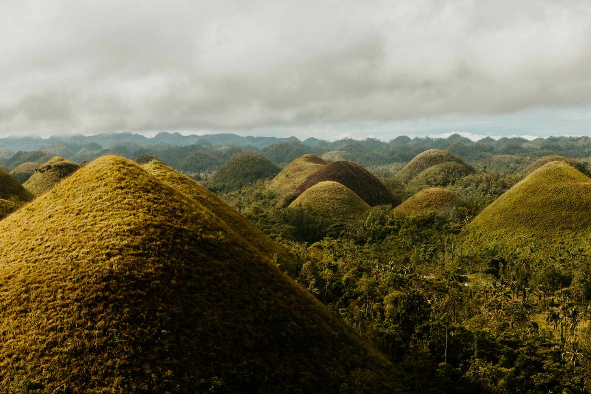

Discover the Chocolate Hills
The Chocolate Hills of Bohol are one of the most iconic natural wonders in the Philippines. These unique geological formations consist of over 1,200 hills that turn chocolate brown during the dry season, creating a surreal and mesmerizing landscape.
What's Included:
- Transportation: Round-trip transfers from Tagbilaran City to the Chocolate Hills.
- Entrance Fee: Access to the Chocolate Hills Complex and viewing deck.
- Local Guide: Learn about the legend and geology of the Chocolate Hills.
- Lunch: Enjoy a delicious local meal at a nearby restaurant.
- Souvenir Stop: Shop for unique Chocolate Hills-inspired items.

Top Activities at Chocolate Hills:
- Viewing Deck: Climb up to the observation area for panoramic views of the Chocolate Hills.
- ATV Adventure: Explore the hills by ATV for an exciting and unique perspective.
- Photography: Capture the stunning beauty of the hills, especially at sunrise or sunset.
- Hiking: Trek around the area to get up close to the hills and enjoy the natural scenery.
- Legend Exploration: Discover the fascinating folklore behind the formation of the Chocolate Hills.